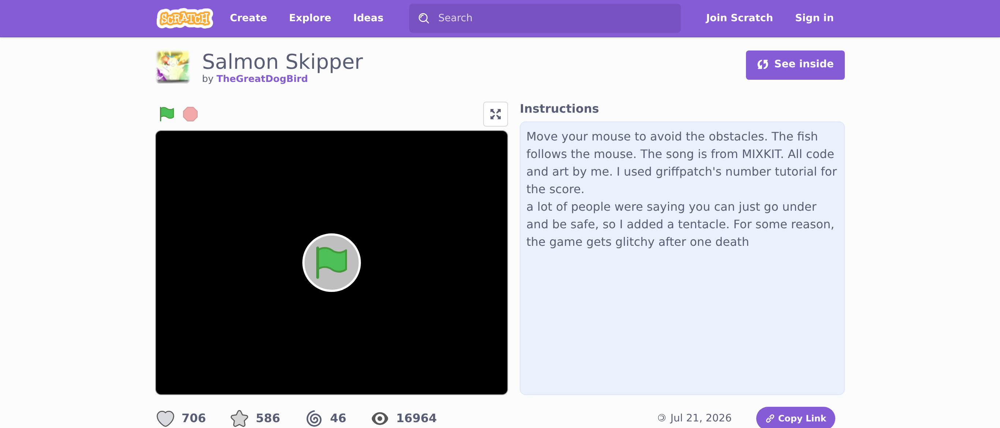

🐞 Lesson 3.3: Debugging & Remixing
Bugs aren't the enemy — they're the job. This lesson gives you a calm, repeatable way to find and fix problems (and coach your child through the frustration), plus how to learn from the world's biggest library of kid-made code.
🎯 Learning Objectives
- Apply a simple 4-step debugging method
- Recognize the most common Scratch bugs and their fixes
- Use See Inside to learn from any shared project
- Understand what remixing is (and its good etiquette)
Estimated Time: 35 minutes • Builds on: All of Modules 1–3
In This Lesson
🎓 Learn It: The debugging mindset
Professional programmers spend more time fixing than writing. "Bug" is just the word for "not doing what I expected yet." The single most valuable thing you can model for your child is calm curiosity in the face of a bug.
The computer isn't wrong and it isn't being mean. It's doing exactly what the blocks say. Debugging is the detective game of finding the gap between what you said and what you meant.
✅ Reframe the language
Swap "It's broken / I failed" for "Interesting — let's find out why." Bugs become puzzles instead of defeats. This one habit protects a child's confidence for years.
🎓 Learn It: The 4-step method
When something's wrong, resist random flailing. Walk this loop instead:
what actually happens"] --> B["2 · Predict
which block causes it"] B --> C["3 · Change
ONE thing"] C --> D["4 · Test
run it again"] D -->|still wrong| A D -->|fixed!| E([🎉]) style A fill:#4C97FF,color:#fff,stroke:#333 style B fill:#5CB1D6,color:#fff,stroke:#333 style C fill:#FFAB19,color:#5c3d00,stroke:#333 style D fill:#59C059,color:#fff,stroke:#333
The golden rule is step 3: change only one thing at a time, then test. Change five things and you'll never know which one mattered.
🔍 Scratch's built-in debugging helpers
- Click a block or stack to run just that piece and watch what it does.
- Tick a variable's checkbox to watch its value change live on the stage.
- Add a temporary "say" block to print a value: say (score) tells you what the computer "thinks."
- Slow it down with wait blocks so you can see each step.
🎓 Learn It: The usual suspects
90% of Scratch bugs are one of these. Keep this table handy:
| Symptom | Usual cause | Fix |
|---|---|---|
| Nothing happens | Code is on the wrong sprite | Select the right sprite in the sprite list |
| Runs once, never reacts again | An if with no loop around it | Wrap the check in a forever loop |
| Blocks after a loop never run | Trapped below a forever | Move them inside, or use repeat until |
| Sprite zooms off / upside-down | Position not reset / rotation style | Add go to x/y at start; set rotation to left-right |
| Score jumps by many at once | Condition stays true for many frames | Move the sprite away, or add a short wait after scoring |
| Two sprites out of sync | Relying on wait timing | Coordinate with broadcast / when I receive |
🎓 Learn It: See Inside & remixing
One of Scratch's superpowers: you can look at the code of almost any shared project. On a project's page, click “See Inside” to open its full code and explore how it was made — a bottomless, free learning resource.

Remixing means making your own copy of someone's project to change and build on. Click See Inside, then Remix (when signed in), and it becomes yours to modify. Scratch is built around this — it's encouraged, not frowned upon.
✅ Remixing done right
- Change something meaningful and make it your own.
- Scratch auto-credits the original — leave that intact.
- Thank the original creator in your notes.
⚠️ Talk with your child about
- Remixing to learn, not to claim someone's work as fully theirs.
- It's normal (and great) to learn by studying others' code.
Reading other people's code is how every programmer improves. "See Inside" turns the whole Scratch community into your child's textbook.
💬 Teach It: Coaching through frustration
A bug plus a tired kid equals tears. Your calm is the most important debugging tool in the room.
The "rubber duck" trick
Have your child explain their code out loud, block by block, to you (or a stuffed animal). Astonishingly often, they find the bug themselves mid-sentence — just from saying it aloud.
"Walk me through it like I know nothing. What should this block do? …and what did it actually do?"
Ask, don't fix
- "What did you expect to happen?"
- "What happened instead?"
- "Which block do you think is responsible?"
- "What's one thing we could change to test that?"
Know when to take a break
If frustration boils over, stop. "Let's let our brains rest — coders do this all the time." Walking away and coming back fresh is a real, professional debugging strategy, not giving up.
👧 Ages 5–7
Keep bugs tiny and fixes fast. Celebrate the fix dramatically: "You SQUASHED the bug!" 🐞
🧒 Ages 8–11
Teach the 4-step method explicitly. Let them lead; you ask the questions. Introduce "See Inside" on a project they love.
🧑 Ages 12+
Encourage remixing an ambitious project to learn a new technique, then bringing that idea back to their own work.
⚠️ The biggest parent mistake
Grabbing the mouse and fixing it yourself. It ends the frustration and the learning. Sit on your hands; ask one more question. The pride of their fix is the whole point.
🎯 Quick Check
Question 1: The golden rule of debugging is…
Question 2: What does "See Inside" do on a shared project?
Question 3: Your child is melting down over a stubborn bug. Best move?
Summary & Module 3 Complete 🎉
🎉 Key Takeaways
- Bugs are normal. Model calm curiosity, not frustration.
- Debug with a loop: Watch → Predict → Change one thing → Test.
- Most bugs are a handful of usual suspects — keep the table handy.
- See Inside and remixing turn the whole community into a learning resource.
🏆 Module 3 done!
You've built a story and a game, and you can fix things when they wobble. That's a genuinely capable coding buddy.
🚀 What's next
Module 4 steps back from blocks to focus on you as a teacher — how to nurture without hovering, how to keep your child safe when sharing, and where the adventure goes after Scratch.